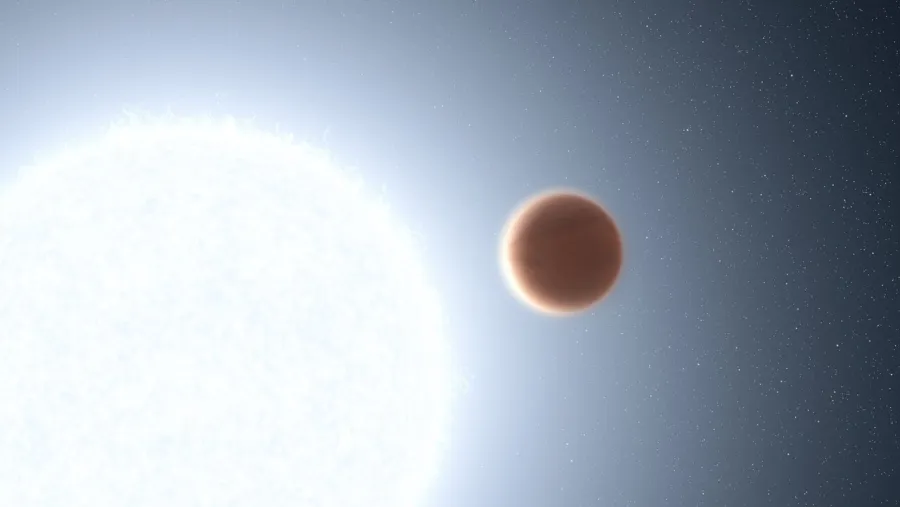

April 6, 2022
WASP-178 b and KELT-20 b: rock vapor and possible rain of rock
Hubble observations reveal extreme weather on two ultra-hot Jupiters. On the cloudless dayside of WASP-178 b, about 1,300 light-years away, the atmosphere contains silicon monoxide gas. Winds of more than 3,200 kilometers per hour carry the gas to the nightside. There it may cool enough to condense into rock and rain out of clouds.
On KELT-20 b, the ultraviolet radiation from the star heats metals in the atmosphere. This creates a layer in which the temperature increases with altitude – similar to Earth's stratosphere.
Sources: NASA: "Hubble probes extreme weather on ultra-hot Jupiters.", 2022-04-06; ESA/Hubble: "Hubble Probes Extreme Weather On Ultra-Hot Jupiter.", 2022-04-06